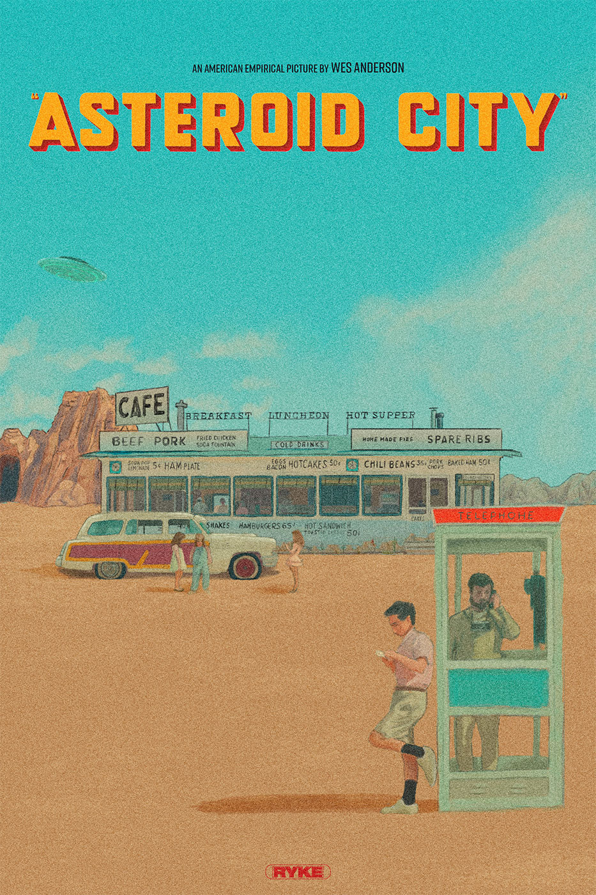

Asteroid City
Wes Anderson ist mit einem weiteren stilisierten Meisterwerk zurück, diesmal vor dem Hintergrund des Space Race der 1950er Jahre.
Charaktere
Handlung
Asteroid City 1955. Die US-amerikanische Wüstenstadt wird so genannt, weil hier vor 5.000 Jahren ein Meteorit einschlug, der einen riesigen Krater hinterlassen hat. Heute ist es der Standort eines Observatoriums der US-Regierung, aber es ist auch der Ort, an dem jedes Jahr ein Kongress stattfindet, bei dem die jugendlichen Erfinder der besten wissenschaftlichen High-School-Projekte geehrt werden.
Durch Asteroid City zieht sich eine lange Wüstenautobahn und einige Bahngleise, auf denen die Regierung alles transportiert, von Pekannüssen bis hin zu Atomsprengköpfen. In der verschlafenen Stadt leben 87 Einwohner, es gibt einen Diner mit 12 Hockern und mehrere Verkaufsautomaten.
Zur Zeit befinden sich der verwitwete Kriegsfotograf Augie Steenbeck und sein Schwiegervater Stanley Zak in der Stadt. Augie hat die ganze Zeit auf den richtigen Moment gewartet, seinen vier kleinen Kindern, die er im Schlepptau hat, vom kürzlichen Tod ihrer Mutter zu erzählen.